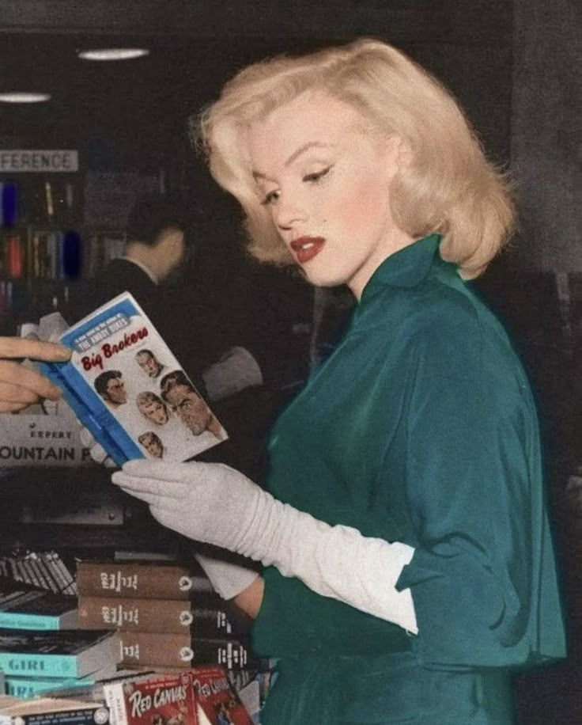
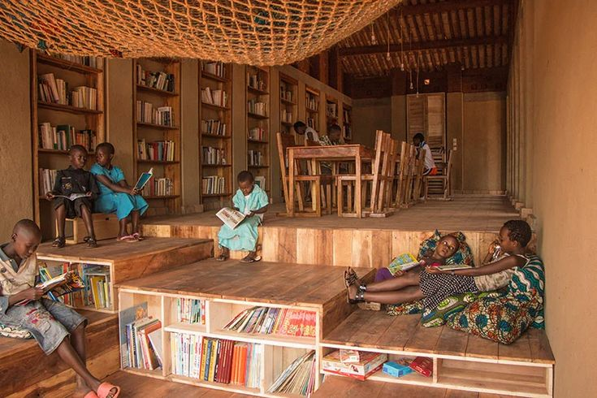
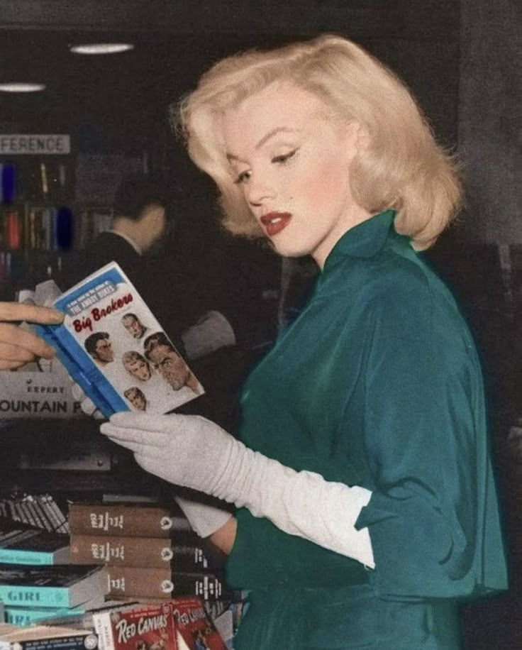
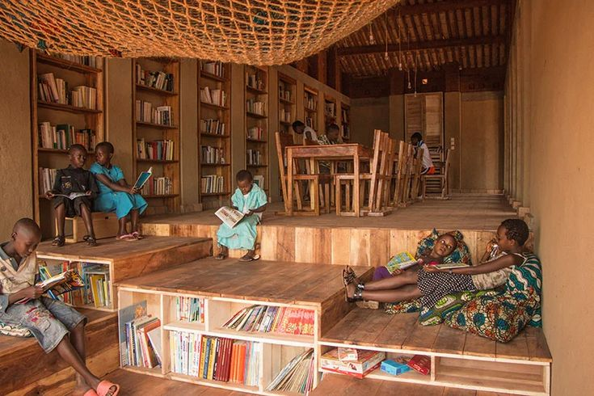

About Me
I am a student of UiTM Kedah, pursuing a diploma in Library Informatics. I am passionate about sonder. My motivational quote from Marilyn Monroe is "Sometimes things fall apart so that better things can fall together". This quote has really taught me to embrace and be brave about things in life to overcome adulthood. And one thing about me is, I’m someone who often finds myself reflecting on life and the people around me. A big part of that is my love for the idea of sonder, the realization that everyone has their own complex lives, full of their own dreams, struggles, and moments that we might never fully understand. It’s a thought that keeps me grounded and helps me connect more deeply with others.
Life can be tough, and adulthood can sometimes feel overwhelming. But instead of fearing change or failure, I’ve learned to embrace it. Every challenge, every moment of uncertainty, is an opportunity to grow, adapt, and eventually find something better. This mindset has shaped not only how I approach life but also how I approach my studies.
In my studies, I’m not just learning about cataloging or archiving; I’m learning how to make information easier to find, more accessible, and more meaningful. The idea of preserving knowledge, of helping people connect with resources that can change their lives, drives me. But beyond the technical side of things, I’m constantly striving to be better than I was yesterday. After all, life isn’t just about where you end up; it’s about the person you become along the way.
 


